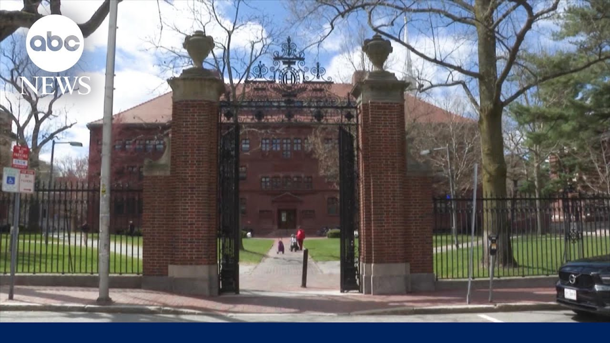

来B站一起耍【Global每日英语简报】
【特朗普表示他将“取消”哈佛大学的免税资格】
Summary: The decision to revoke Harvard's tax-exempt status, which the university warns will severely impact higher education, follows frozen federal funding and accusations of failing to address anti-Semitism, sparking a legal and political battle with the Trump administration.
摘要： 撤销哈佛大学免税资格的决定，校方警告将严重影响高等教育，此前联邦资金被冻结并被指控未能解决反犹太主义问题，引发了与特朗普政府的法律和政治斗争。

⏱️ Estimated Reading Time: 4 min
So, it's a decision that Harvard says will have grave consequences for the future of higher education.
因此，哈佛大学表示这一决定将对高等教育的未来产生严重后果。
President Trump says he's taking away Harvard's tax-exempt status.
特朗普总统表示他将取消哈佛大学的免税资格。
It comes after the administration froze more than two billion dollars in federal funding for Harvard after the president said the Ivy League institution failed to confront anti-semitism on campus.
此前，政府冻结了哈佛大学超过20亿美元的联邦资金，总统称这所常春藤盟校未能解决校园内的反犹太主义问题。
Senior White House correspondent Selena Wang is on the story for us.
白宫资深记者Selena Wang为我们报道此事。
Hey, Selena.
你好，Selena。
Hey, Cara.
你好，Cara。
President Trump is doubling down on his threats against Harvard, posting this morning on social media, quote, "We are going to be taking away Harvard's tax-exempt status.
特朗普总统加大了对哈佛的威胁力度，今早在社交媒体上发文称：“我们将取消哈佛的免税资格。
It's what they deserve."
这是他们应得的。”
In response, Harvard is telling ABC News this in a statement, quote, "The government has long exempted universities from taxes in order to support their educational mission.
作为回应，哈佛大学在一份声明中告诉ABC新闻：“政府长期以来免除大学的税收以支持其教育使命。
The tax exemption means that more of every dollar can go towards scholarships for students, life-saving and life-enhancing medical research, and technological advancements that drive economic growth.
免税意味着每一美元可以更多地用于学生奖学金、拯救和改善生命的医学研究以及推动经济增长的技术进步。
There is no legal basis to rescind Harvard's tax-exempt status.
撤销哈佛免税资格没有法律依据。
Now, this is a dramatic escalation when it comes to the battle between the Trump administration and Harvard University.
这是特朗普政府与哈佛大学之间斗争的急剧升级。
This could cost the school hundreds of millions of dollars per year.
这可能使学校每年损失数亿美元。
And it comes after reports last month that the IRS was considering revoking Harvard's tax-exempt status with President Trump at the time saying that Harvard should be taxed as a quote political entity.
此前有报道称，国税局上个月正考虑撤销哈佛的免税资格，特朗普总统当时表示哈佛应被作为‘政治实体’征税。
Now, Harvard is also just one of several elite universities that have come under pressure from the White House for their diversity practices and alleged anti-semitism.
哈佛只是白宫因其多样性政策和涉嫌反犹太主义而施压的几所精英大学之一。
This also comes after the Trump administration froze billions of dollars in federal funds to Harvard University after Harvard refused to comply with a list of demands which included the administration reviewing its diversity programs and changing its admissions practices.
此前，特朗普政府冻结了哈佛大学数十亿美元的联邦资金，因为哈佛拒绝遵守一系列要求，包括政府审查其多样性项目并改变招生政策。
Harvard then in response filed a lawsuit against the university arguing that the Trump administration was violating its constitutional rights.
哈佛随后提起诉讼，称特朗普政府侵犯了其宪法权利。
At the time, Harvard's president Alan Garber wrote this in a statement.
当时，哈佛校长Alan Garber在一份声明中写道。
quote, "The consequences of the government's overreach will be severe and long lasting.
“政府越权的后果将是严重而持久的。
Before taking punitive action, the law requires that the federal government engage with us about the ways we are fighting and will continue to fight anti-semitism.
法律要求联邦政府在采取惩罚性行动前与我们商讨我们正在并将继续打击反犹太主义的方式。
Instead, the government's April 11 demands seek to control whom we hire and what we teach.
然而，政府4月11日的要求试图控制我们雇佣谁和教授什么。
Today, we stand for the values that have made American higher education a beacon for the world."
今天，我们捍卫使美国高等教育成为世界灯塔的价值观。”
But Kier, it's not even clear if it is legal for the president to order this kind of action.
但Kier，总统下令此类行动是否合法尚不明确。
The IRS can revoke tax exempt status.
国税局可以撤销免税资格。
It has done so before, but it is rare to do so for a university.
此前曾这样做过，但对大学这样做很罕见。
But the law clearly states that the president cannot tell the IRS to investigate specific taxpayers.
但法律明确规定总统不能指示国税局调查特定纳税人。
Kira.
Kira。
All right, Selena Wang.
好的，Selena Wang。
Thank you.
谢谢。